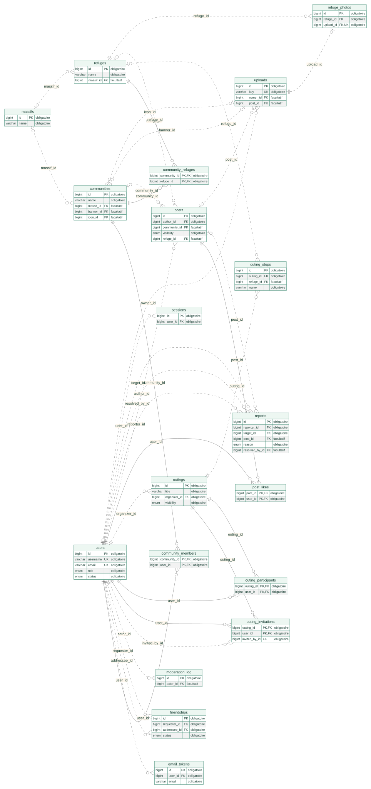
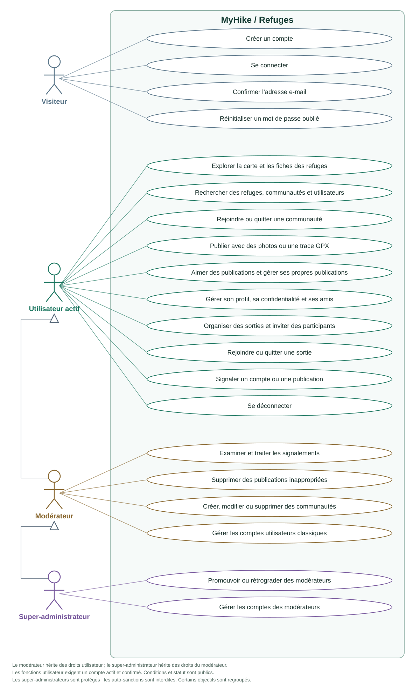
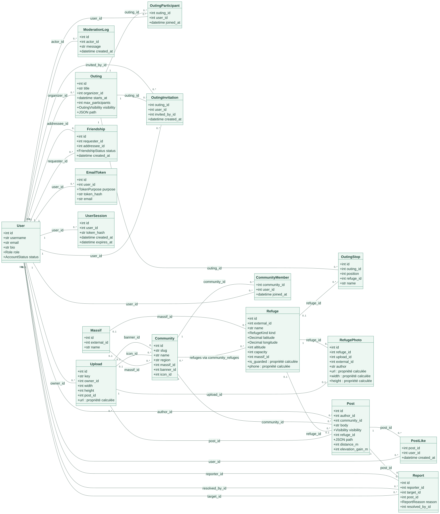
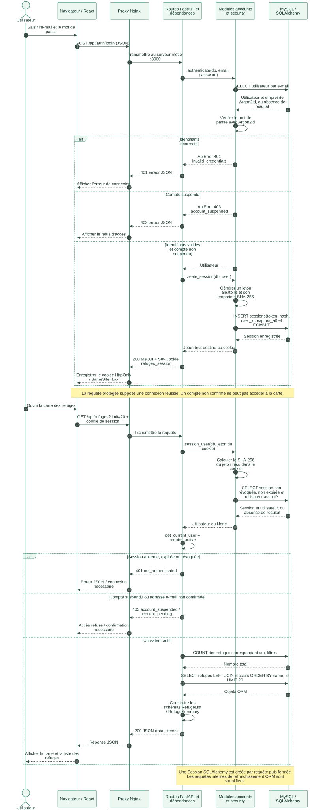
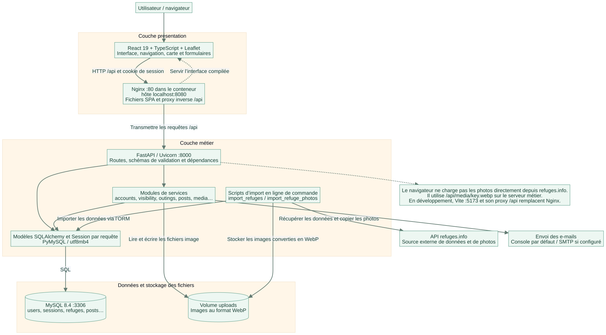
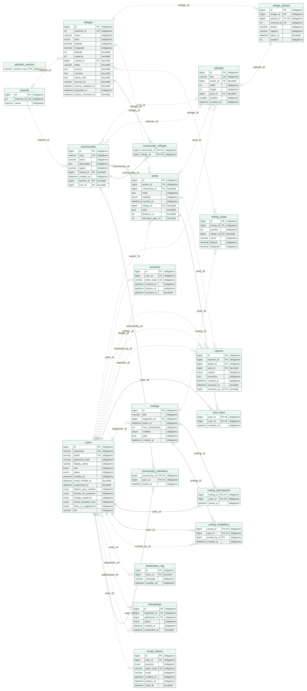

Base de données, acteurs, classes métier, parcours des requêtes et architecture trois tiers.
Diagramme entité-association : tables applicatives, clés, liens facultatifs et cardinalités.

Acteurs, fonctionnalités et héritage des droits selon les règles réellement implémentées.

Classes SQLAlchemy réelles, principaux attributs, associations et propriétés calculées.

Connexion, création du cookie de session, contrôle des droits et consultation des refuges.

Interface, proxy inverse, serveur métier, stockage SQL et services externes.

Toutes les tables et colonnes de schema.sql, y compris le suivi de version Alembic.
